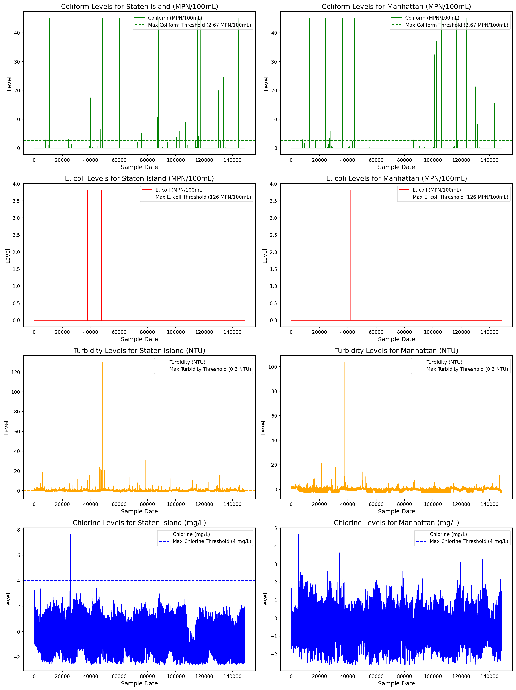

The purpose of this project is to analyze factors affecting water quality as based off of national standards. Our dataset contains columns with measurements of various bacteria in water sampling sites across NYC. We will perform logistic regression, with the response variable being a binary column representing whether the sites are compliant with standards drinking water cleanliness.
The dates from the original dataset are written as strings and divided between two columns, one for the date and one for the time. We merged these two columns to create one column for the date and converted it to a datetime.
Code
# ensure sample time column is cleandata.dropna(subset = ['Sample Time'], inplace =True)# standardize format of sample timedata['Sample Time'] = data['Sample Time'].apply(lambda x: x[11:16] iflen(x) >5else x)# change to datetime formatdata['sample_date'] = pd.to_datetime(data['sample_date'] +' '+ data['Sample Time'])# change turbidity to floatdata.loc[data['turbidity'] =='<0.10', 'turbidity'] ='0.10'data['turbidity'] = data['turbidity'].apply(lambda x: float(x))# Check the first few rows after creating 'sample_date'print(data[['sample_date']].head())
We dropped the following columns because they’re unecessary to our investigation or have more than half the data missing.
Code
# drop unecessary columns and rowsdata.drop(columns = ['Sample Number', 'Fluoride (mg/L)', 'Sample Time'], inplace =True)
In the following code, we changed the categorical values for being less than/greater than to numerical values. Furthermore, we ensured that the columns for chlorine, coliform, ecoli, and turbidity were cast as float types.
We made sure that there were no invalid values in the following columns based on possible values of ecoli, chlorine, coliform, and turbidity.
Code
# check to make sure all values are possibledata = data[data['chlorine'] >0]data = data[data['coliform'] >0]data = data[data['ecoli'] >0]
There were only four remaining missing values, so I dropped the rest.
Code
# only 4 missing values total - dropdata = data.dropna()data.shape
(148701, 7)
4 Pulling Location Information from Site Sample Data
Using the uszipcode package, we pulled demographic data for each sample site using the site’s zip code, which was obtained from an additional dataset given along with the original data.
Code
# read in data for sampling sitessites = pd.read_csv('../data/sampling_sites_extended.csv')# use search engine to find demographic datasearch = SearchEngine() zipdata = [] for zipcode in sites['ZIP Code']: info = search.by_zipcode(zipcode)ifbool(info) ==True: zipdata.append({'ZIP Code': zipcode,'housing_units': info.housing_units /1000,'occupied_housing_units': info.occupied_housing_units /1000, 'median_home_value': info.median_home_value /1000,'median_household_income': info.median_household_income /1000 })# add demographic data to sampling siteszipdata = pd.DataFrame(zipdata) sites = pd.merge(sites, zipdata, how ='inner', on ='ZIP Code')sites = sites.drop_duplicates()# merge with location based informationsites.rename(columns = {'Sample Site': 'sample_site'}, inplace =True)data = pd.merge(data, sites, on ='sample_site')
Since the original goal of this project had been to use a time series model, we sorted the data by sample date and dropped unecessary columns, such as the X and Y - coordinates, since Longitude and Latitude were already included.
Code
# set 'sample_date' as the index and sort by 'sample_date'data = data.set_index('sample_date')data = data.sort_values(by='sample_date')# prepare for modellingdata = data.drop(columns = ['OBJECTID', 'sample_site', 'sample_class', 'Sample Station (SS) - Location Description','X - Coordinate', 'Y - Coordinate','City or Placename'])# separate location data columns from the rest of the datalocation_columns = ['ZIP Code', 'latitude', 'longitude', 'housing_units', 'occupied_housing_units', 'median_home_value', 'median_household_income']# identify the other columns (excluding location data)columns_to_scale = [col for col in data.columns if col notin location_columns]# scale only the non-location columnsdata[columns_to_scale] = (data[columns_to_scale] - data[columns_to_scale].mean()) / data[columns_to_scale].std()# save cleaned and merged data to new filedata.to_csv('data/data_merged.csv', index=False)
4.1 Borough Information
Using uszipcode again, we added a column for borough that was based off the zip code of the sample site. Furthermore, since some of the boroughs were still missing, these were imputed using KNeighborsClassifier and the latitude and longitude. If major cities were extracted instead, I created a mapping key to change them to their boroughs manually. This resulted in accurate information and we had no null rows!
Code
from uszipcode import SearchEnginefrom sklearn.neighbors import KNeighborsClassifierfrom sklearn.preprocessing import LabelEncoder# lowercase column namesdata.columns = data.columns.str.lower()# initialize the search enginesearch = SearchEngine()# list of nyc boroughsnyc_boroughs = ['Manhattan', 'Brooklyn', 'Queens', 'Bronx', 'Staten Island']# Define a dictionary mapping neighborhoods/cities to boroughsneighborhood_to_borough = {# Manhattan neighborhoods'New York': 'Manhattan','Harlem': 'Manhattan','Upper West Side': 'Manhattan','Upper East Side': 'Manhattan','Chelsea': 'Manhattan','SoHo': 'Manhattan','Greenwich Village': 'Manhattan','Tribeca': 'Manhattan','Financial District': 'Manhattan','Lower East Side': 'Manhattan','East Village': 'Manhattan','Midtown': 'Manhattan',# Queens neighborhoods'Forest Hills': 'Queens','Jackson Heights': 'Queens','Astoria': 'Queens','Ridgewood': 'Queens','Sunnyside': 'Queens','Flushing': 'Queens','Long Island City': 'Queens','Woodside': 'Queens','Bayside': 'Queens','Rego Park': 'Queens','Elmhurst': 'Queens','Kew Gardens': 'Queens','Oakland Gardens': 'Queens','Fresh Meadows': 'Queens','Whitestone': 'Queens','Corona': 'Queens','Maspeth': 'Queens','Jamaica': 'Queens','Queens Village': 'Queens','South Ozone Park': 'Queens','Far Rockaway': 'Queens',}def get_borough(zipcode):# Fetch the information about the zipcode info = search.by_zipcode(zipcode)if info and info.major_city: major_city = info.major_cityprint(f"Zipcode {zipcode}: major city = {major_city}") # Debugging output# First, check if the city or neighborhood is explicitly mapped to a boroughif major_city in neighborhood_to_borough:return neighborhood_to_borough[major_city]# If not, check if it's one of the 5 NYC boroughsif major_city in nyc_boroughs:return major_cityreturnNone# Apply the function to the 'zip code' column to create a new 'borough' columndata['borough'] = data['zip code'].apply(lambda x: get_borough(str(x)))# Handle missing boroughs using KNN# Only use rows where borough is not null for training the modelimpute_X = data[data['borough'].notnull()][['latitude', 'longitude']]impute_Y = data[data['borough'].notnull()]['borough']# Encode borough labels for classificationencoder = LabelEncoder()impute_Y = encoder.fit_transform(impute_Y)# Initialize and train the KNN classifierknn = KNeighborsClassifier()knn.fit(impute_X, impute_Y)# Predict missing boroughs based on latitude and longitudeX_missing = data[data['borough'].isnull()][['latitude', 'longitude']]predicted_labels = knn.predict(X_missing)predicted_boroughs = encoder.inverse_transform(predicted_labels)# Fill missing boroughs in the datadata.loc[data['borough'].isnull(), 'borough'] = predicted_boroughs# Check for remaining missing borough valuesprint(f'Missing boroughs after imputation: {data["borough"].isnull().sum()}')# manually update the boroughs based on the `neighborhood_to_borough` dictionaryfor neighborhood, borough in neighborhood_to_borough.items(): data.loc[data['borough'] == neighborhood, 'borough'] = borough# Save the updated DataFramedata.to_csv('data/merged_data_with_borough.csv', index=False)
5 Visualization of Chemical Levels by the Least and Most Densely Populated Boroughs
Made sure to apply the threshold levels that indicate maximum level of chemical presence.
Code
import seaborn as snsimport matplotlib.pyplot as pltimport pandas as pdmerged_df = pd.read_csv('../data/borough.csv')# list of boroughs to plot (only Manhattan and Staten Island)boroughs_to_plot = ['Staten Island', 'Manhattan']# figure to hold 4 subplots (one for each variable per borough)fig, axes = plt.subplots(nrows=4, ncols=2, figsize=(15, 20))# threshold values for each chemicalthresholds = {'chlorine': 4, # mg/L'turbidity': 0.3, # NTU'coliform': 2.67, # MPN/100mL'ecoli': 0# MPN/100mL}# loop over each borough and create plotsfor i, borough inenumerate(boroughs_to_plot):# filter data for the current borough borough_data = merged_df[merged_df['borough'] == borough]# plot for Coliform levels (MPN/100mL) ax = axes[0, i] # Top row ax.plot(borough_data.index, borough_data['coliform'], label='Coliform (MPN/100mL)', color='green') ax.axhline(y=thresholds['coliform'], color='green', linestyle='--', label='Max Coliform Threshold (2.67 MPN/100mL)') ax.set_title(f'Coliform Levels for {borough} (MPN/100mL)', fontsize=14) ax.set_xlabel('Sample Date', fontsize=12) ax.set_ylabel('Level', fontsize=12) ax.legend(loc='upper right')# plot for E. coli levels (MPN/100mL) ax = axes[1, i] # Second row ax.plot(borough_data.index, borough_data['ecoli'], label='E. coli (MPN/100mL)', color='red') ax.axhline(y=thresholds['ecoli'], color='red', linestyle='--', label='Max E. coli Threshold (126 MPN/100mL)') ax.set_title(f'E. coli Levels for {borough} (MPN/100mL)', fontsize=14) ax.set_xlabel('Sample Date', fontsize=12) ax.set_ylabel('Level', fontsize=12) ax.legend(loc='upper right')# plot for Turbidity levels (NTU) ax = axes[2, i] # Third row ax.plot(borough_data.index, borough_data['turbidity'], label='Turbidity (NTU)', color='orange') ax.axhline(y=thresholds['turbidity'], color='orange', linestyle='--', label='Max Turbidity Threshold (0.3 NTU)') ax.set_title(f'Turbidity Levels for {borough} (NTU)', fontsize=14) ax.set_xlabel('Sample Date', fontsize=12) ax.set_ylabel('Level', fontsize=12) ax.legend(loc='upper right')# plot for Chlorine levels (mg/L) ax = axes[3, i] # Fourth row ax.plot(borough_data.index, borough_data['chlorine'], label='Chlorine (mg/L)', color='blue') ax.axhline(y=thresholds['chlorine'], color='blue', linestyle='--', label='Max Chlorine Threshold (4 mg/L)') ax.set_title(f'Chlorine Levels for {borough} (mg/L)', fontsize=14) ax.set_xlabel('Sample Date', fontsize=12) ax.set_ylabel('Level', fontsize=12) ax.legend(loc='upper right')plt.tight_layout()plt.show()

6 Logistic Regression Modelling
6.1 Analyzing how boroughs predict water quality
6.1.1 Function to preprocess and create the ‘compliant’ target variable
We created a binary response variable, compliant, indicating whether or not the levels of chlorine, ecoli, turbidity, and coliform are all compliant with national drinking water standards. Ths was created as a binary variable, with 1 indicating compliance and 0 indicating noncompliance.
6.1.3 Function for hyperparameter tuning using GridSearchCV
Tested to use both l1 and l2 regulization. This helped with penalitizng our features to focus on stronger predictors. We used grid search to find best hyperparameters which we then were able to use as final model.
6.1.4 Function to train and evaluate the model using the best parameters from GridSearchCV
Set our threshold to 0.3 to help with class imbalance. We then fitted our Logistic Regression model using our best parameters. This helped us optimize our model tremendously.
Code
def train_and_evaluate_model(X_train, y_train, X_test, y_test, best_logreg, threshold=0.3):# standardize the features scaler = StandardScaler() X_train_scaled = scaler.fit_transform(X_train) X_test_scaled = scaler.transform(X_test)# fit the Logistic Regression model with the best parameters best_logreg.fit(X_train_scaled, y_train)# get predicted probabilities and adjust threshold y_pred_prob = best_logreg.predict_proba(X_test_scaled)[:, 1] y_pred_adjusted = (y_pred_prob > threshold).astype(int)# evaluation metricsprint('Accuracy:', accuracy_score(y_test, y_pred_adjusted))print('Precision:', precision_score(y_test, y_pred_adjusted))print('Recall:', recall_score(y_test, y_pred_adjusted))print('F1 Score:', f1_score(y_test, y_pred_adjusted)) cm = confusion_matrix(y_test, y_pred_adjusted)print(cm)return best_logreg
6.1.5 Function to plot feature importance
Our L1 and L2 regulization helped us pentalize the least significant coefficients to zero therefore we got more accurate results. This showed us that location features slighltly help with predicting water quality.
Code
def plot_feature_importance(model, X): coefficients = model.coef_[0] feature_names = X.columns feature_importance_df = pd.DataFrame({'Feature': feature_names,'Coefficient': coefficients,'Absolute Coefficient': abs(coefficients) }) feature_importance_df = feature_importance_df.sort_values(by='Absolute Coefficient', ascending=False)# feature importanceprint(feature_importance_df) plt.figure(figsize=(10, 6)) plt.barh(feature_importance_df['Feature'], feature_importance_df['Absolute Coefficient'], color='skyblue') plt.xlabel('Absolute Coefficient') plt.title('Feature Importance (Logistic Regression)') plt.gca().invert_yaxis() # Invert y-axis to show the most important features at the top plt.show()
6.1.6 Function to plot the learning curve
We wanted to see how our model is training and if its improvng our F1 score. We see from the curve that it is giving us a stable and high f1 score as the models fits more trainintgs.
The goal of this project was to analyze factors that affect water quality and predict whether water sampling sites across NYC comply with national standards for drinking water cleanliness. The dataset contains measurements of various bacteria in water samples, and we used logistic regression to predict compliance, with the response variable being a binary classification: compliant (1) or non-compliant (0).
We began by importing the required libraries and packages necessary for data analysis, including pandas, scikit-learn, imblearn, and visualization libraries like matplotlib.
In terms of data cleaning, we started with fixing date columns. We merged separate date and time columns into a single datetime column for easier analysis. We dropped unnecessary columns. We removed columns with irrelevant information or missing data, ensuring the dataset was clean and ready for analysis.
Data Type Conversions: We converted categorical values (less than/greater than) to numerical values and ensured key columns (e.g., chlorine, ecoli, coliform) were cast as float types.
Handling Missing Data: After addressing missing values, we ended up with a cleaned dataset of size (148701, 7).
Pulling Location Information: Using the uszipcode package, we pulled demographic data based on the zip code of each sample site. We added borough information and imputed missing borough data using K-Nearest Neighbors and geographic coordinates (latitude and longitude).
Visualization of Chemical Levels by Borough: We visualized the chemical levels for the least and most densely populated boroughs. We applied the relevant threshold values for chemical concentrations to observe trends in different locations.
Logistic Regression Modelling:
We defined a binary target variable compliant based on water quality standards for chlorine, ecoli, turbidity, and coliform. A value of 1 indicates compliance, and 0 indicates non-compliance. Since the dataset was imbalanced (more compliant than non-compliant samples), we used SMOTE (Synthetic Minority Over-sampling Technique) to generate synthetic data for the minority class (non-compliant) to improve model performance.
In term of choosing the hyperpamaters, we found best hyperparameters from doing a grid search and trained the logistic regression model on the best hyper parameters provided. We set a threshold of 0.3 for classifying non-compliant water. This adjustment helped to deal with the class imbalance and optimized model performance. We analyzed the importance of features in predicting water quality. Regularization (L1 and L2) helped penalize less significant features. The most important features influencing predictions were chlorine levels, turbidity, and the geographical location of the sampling sites (boroughs).
We plotted the learning curve to monitor model performance over increasing training sizes. The curve showed stable and high F1 scores, indicating that the model improved with more data. The pipeline incorporated all the steps, from preprocessing data to model evaluation:
Best cross-validation score (F1): 0.808
Model Evaluation:
Accuracy: 74.92%
Precision: 66.64%
Recall: 99.71%
F1 Score: 79.89%
Confusion Matrix:
[[15390 15297]
[ 88 30562]]
The model showed good performance, especially with recall, as it detected almost all compliant water samples (high recall). However, the precision was slightly lower, meaning it sometimes misclassified non-compliant water as compliant.
The features with the highest absolute coefficients (indicating their importance) were:
Chlorine: 1.036
Turbidity: 1.017
borough_Manhattan: 0.132902
borough_Brooklyn: 0.095154
median_home_value: 0.076015
median_household_income: 0.073837
Borough information (Manhattan, Brooklyn) contributed to the prediction, though less significantly. The coefficients for ecoli, housing_units, and some other features were near zero, suggesting they had little impact on the prediction.
Final Statements:
Chlorine and turbidity were the most significant predictors of water quality.
Boroughs (Manhattan and Brooklyn) had a moderate impact on water quality predictions.
The model achieved a high recall, making it effective at detecting compliant water, but we can still improve precision by reducing false positives.
In conclusion, our logistic regression model is moderatly good for predicting water quality compliance based on environmental and socio-economic factors in NYC.